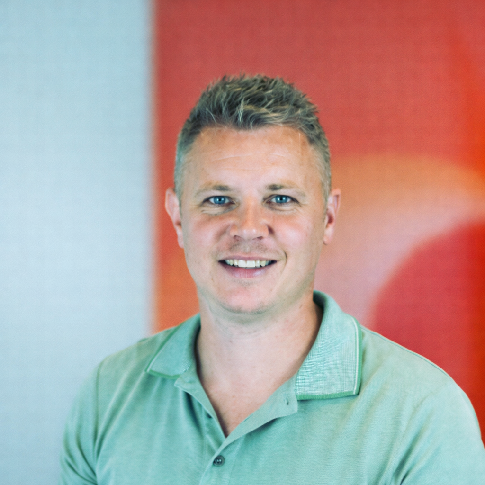

AIffinity overbrugt de kloof — van AI-experimenten naar echte bedrijfswaarde.
AI-initiatieven beginnen vaak met enthousiasme — maar vertalen zelden naar echte bedrijfswaarde.
Proof-of-concepts die nooit in productie komen.
Teams experimenteren met AI, maar inspanningen blijven los van elkaar staan.
Organisaties missen de vaardigheden, structuur en systemen die nodig zijn om AI op te schalen.
AIffinity helpt organisaties echte waarde uit AI halen.
We maken teams vaardig, identificeren de juiste kansen, implementeren intelligente systemen, en bouwen de interne capaciteit om AI op te schalen.
Stel je mensen in staat effectief met AI te werken.
We helpen teams begrijpen hoe AI hun dagelijks werk kan ondersteunen. Van praktische training tot hands-on use cases, medewerkers leren AI te gebruiken om tijd te besparen, kwaliteit te verbeteren en slimmer te werken.
Ontdek waar AI echte bedrijfswaarde kan creëren.
We identificeren arbeidsintensieve processen en kansen waar AI werk kan automatiseren of besluitvorming kan ondersteunen. Het resultaat: een duidelijke roadmap van use cases die meetbare impact leveren.
Zet AI-kansen om in werkende oplossingen.
We ontwerpen en bouwen AI-systemen die repetitieve taken automatiseren en bedrijfsprocessen verbeteren. Van prototype tot productie, we zorgen dat oplossingen echte operationele waarde leveren.
Bouw je interne AI-team.
AIffinity helpt organisaties AI-ontwikkeling kickstarten door vroege oplossingen te leveren terwijl we de opbouw van interne AI-teams ondersteunen.
Begrijp waar AI de meeste waarde kan creëren.
We beoordelen je huidige processen, AI-volwassenheid en kansen. Het doel is simpel: identificeren waar AI de grootste bedrijfsimpact kan genereren.
Vertaal inzichten naar een duidelijke AI-roadmap.
Op basis van de diagnose identificeren we de meest veelbelovende use cases en bepalen we de beste weg vooruit — van AI-adoptie door medewerkers tot procesautomatisering of strategische initiatieven.
Lever de capaciteiten die waarde genereren.
Afhankelijk van je behoeften ondersteunt AIffinity je organisatie door AI-consulting, ontwikkeling van oplossingen, of implementatie van intelligente systemen.
Bouw langetermijn AI-capaciteit.
We helpen je organisatie AI-adoptie op te schalen door interne expertise te ontwikkelen, teams te enablen, en de opbouw van interne AI-capaciteiten te ondersteunen.
De toekomst wordt niet gebouwd door wie experimenteert met AI — maar door wie het omzet in echte waarde.
AIffinity is gebaseerd op een simpel principe: intelligentie moet impact creëren, niet alleen experimentatie.
In een wereld overspoeld met AI-hype, worstelen veel organisaties om verder te komen dan pilots en proof-of-concepts. Beloftes zijn hoog. Echte impact blijft beperkt.
AIffinity helpt organisaties die kloof te overbruggen.

Oprichter van AIffinity
Wouter is een AI-engineer en consultant met meer dan 10 jaar ervaring in IT, waarvan 7 jaar werken met AI-systemen. Zijn werk bevindt zich op het snijvlak van technologie, consulting en leiderschap — het verbinden van zakelijke uitdagingen met schaalbare AI-architecturen en de teams die deze leveren.
Voordat hij AIffinity oprichtte, was Wouter AI Engineering Team Lead bij Atos, waar hij een team van engineers leidde die AI-oplossingen leverden voor enterprise klanten. Hij heeft uitgebreide ervaring met het bouwen van conversational AI-platforms en het integreren van large language models in productieomgevingen.
Via AIffinity helpt hij organisaties verder te komen dan AI-experimentatie door production-grade AI-systemen te ontwerpen en implementeren die echte bedrijfsimpact creëren.
Voordat hij AIffinity oprichtte, werkte Wouter aan verschillende AI-systemen in telecom en enterprise omgevingen, waaronder:
Implementatie van large language models om intent classificatie en gesprekskwaliteit te verbeteren.
Ontwerp en verbetering van een grootschalig conversational AI-platform gebruikt door een telecomprovider om klantenservice-interacties te automatiseren.
Ontwikkeling van data pipelines en geautomatiseerde rapportage om voertuigconditie te monitoren over wagenparken.
Migratie van legacy chatbot infrastructuur naar een moderne AI-stack op Google Cloud.
Ontwikkeling van een semantisch zoek prototype met natural language processing om de toegankelijkheid van historische documenten te verbeteren.
Laten we verkennen waar AI de meeste impact kan creëren in jouw organisatie.
Geen voorbereiding nodig — een kort gesprek is genoeg om te verkennen waar AI waarde kan creëren voor jouw organisatie.